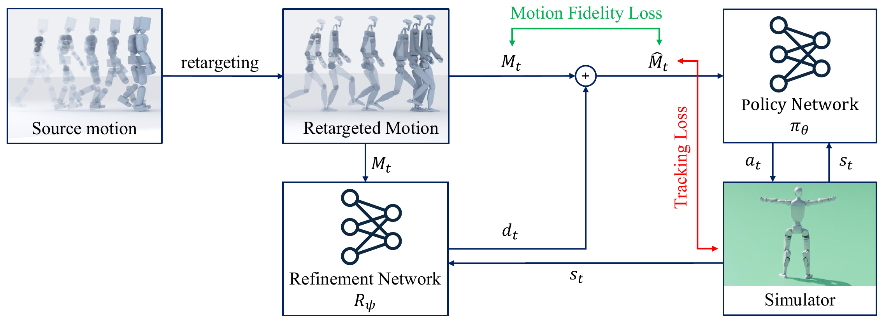

Adaptive Reference Refinement for Physics-based Motion Retargeting
Seoul National University
Abstract
Physics-based character control for high-dimensional humanoid motion requires reference motion-capture data to guide stable training of the reinforcement learning (RL) policy. However, the motion dynamics of the reference trajectory and the control target may differ in terms of mass, torque limits, and morphology. Conventional retargeting compensates for offsets based on kinematic structure, without considering real-world dynamics such as gravity, contact forces, and torque control, and the resulting motion fails to robustly guide policy training for the control target. We propose a motion refinement network that learns to automatically adjust retargeted results to be physically plausible, reflecting the non-linear relationship arising from the dynamic interplay between different skeleton structures and the environment. As the policy directly learns to track refined references in physical simulation, the resulting motions are free of physical artifacts, such as foot sliding, ground penetration, and implausible joint configurations, which are frequently observed in retargeting results applying inverse kinematics. While concurrent training of motion refinement and the RL policy often diverges, we introduce a warming-up scheme that initially trains the policy using only a fixed refinement network, then gradually introduces refinement offsets. The offsets are then selectively applied to the retargeted motion only when a substantial deviation is required. Experiments show that our method consistently improves physical plausibility over retargeting baselines using inverse kinematics, and further improves tracking performance particularly when combined with baselines that produce reasonably reliable initial references. Our method also generalizes robustly to retargeting across extremely different morphologies and physical properties, including dramatic changes in limb lengths and carrying of excessively heavy payloads.
Method

Motion Refinement Network
The motion refinement network observes the current reference pose and the proprioceptive state of the simulated character, and predicts displacements for the joint angles, root position, and root rotation. The policy uses the refined reference as its tracking target in physical simulation.
Optimization Objectives
The refinement network is trained with an objective separate from the policy optimization, consisting of four terms:
Motion Fidelity Loss. A dead-zone quadratic loss permits bounded deviations from the original reference while penalizing larger changes in body positions and rotations to preserve the semantic content of the source motion.
Tracking Loss. This loss minimizes the difference between the refined reference and the simulated character’s body pose, guiding refinement toward poses that are physically achievable for the target character.
Smoothness Loss. This loss penalizes changes in the predicted displacement between consecutive timesteps to encourage temporally consistent refinement.
Regularization Term. This term penalizes the magnitude of the network output to discourage unnecessarily large displacements and keep refinement minimal.
Training Techniques
Alternating Training with Warming-up. The refinement network is frozen during the initial training iterations so that the policy can learn to track the original references. After this phase, the refinement network is updated alongside the policy using its own objective.
Early Termination. The termination criterion measures deviation from the original reference rather than the refined reference, preventing refinement from allowing the character to drift into undesirable states without ending the episode.
Results
Experimental Setup
We evaluate on AMASS [1] motions retargeted to the Unitree H1-2 and G1 robots. The baselines are ProtoMotions [2], GMR [3], and OmniRetarget [4]; the motion obtained through physical simulation is used as our retargeting output.
Physical Plausibility
Our method eliminates ground penetration across the evaluated baselines on both robots and generally reduces the occurrence and height of foot floating. With OmniRetarget on H1-2, the floating rate increases slightly, from 4.75% to 5.08%, while its mean height decreases from 2.21 cm to 0.34 cm.
Tracking Performance
On the H1-2 test split, tracking success increases from 64.5% to 71.1% with GMR and from 62.1% to 72.3% with OmniRetarget. Improvements are less pronounced with ProtoMotions, whose initial references frequently contain airborne poses that are difficult to track.
| Method (H1-2) | Success (%) | Pos. err (cm) | Rot. err (rad) |
|---|---|---|---|
| ProtoMotions | 51.3 | 35.6 | 0.35 |
| ProtoMotions + Ours | 52.2 | 34.4 | 0.36 |
| GMR | 64.5 | 21.8 | 0.35 |
| GMR + Ours | 71.1 | 20.1 | 0.33 |
| OmniRetarget | 62.1 | 28.1 | 0.40 |
| OmniRetarget + Ours | 72.3 | 22.2 | 0.36 |
H1-2 test split; mean over 10 evaluation rollouts. Higher success and lower errors are better.
Faithfulness to the Source Motion
In a study with 20 participants, perceived similarity to the source motion was rated on a five-point scale. Our method applied to GMR received a mean score of 3.19, compared with 2.44 for OmniRetarget and 4.09 for GMR, indicating a trade-off between physical plausibility and perceived motion fidelity.
Robustness to Extreme Morphologies
We also evaluate an H1-2 with half-length legs and a 20 kg backpack. Refinement enables stable training in this setting, whereas training with the unrefined reference fails to converge.
Conclusion
We present a motion refinement network that adaptively adjusts retargeted references during RL training. Joint training with the control policy improves physical plausibility and supports retargeting across substantial differences in morphology and physical properties.
Limitations
The quality of the refined motion depends on the initial reference, and the additional network increases training time by approximately 20%. Brief foot floating can remain in difficult motions.
References
- AMASS: Archive of Motion Capture as Surface Shapes.
- ProtoMotions3: An Open-Source Framework for Humanoid Simulation and Control.
- Retargeting Matters: General Motion Retargeting for Humanoid Motion Tracking.
- OmniRetarget: Interaction-Preserving Data Generation for Humanoid Whole-Body Loco-Manipulation and Scene Interaction.
BibTeX
@article{jeong2026adaptive,
title = {Adaptive Reference Refinement for Physics-based Motion Retargeting},
author = {Jeong, Seungbin and Kim, Young Min},
journal = {Computer Graphics Forum},
volume = {45},
number = {7},
year = {2026}
}